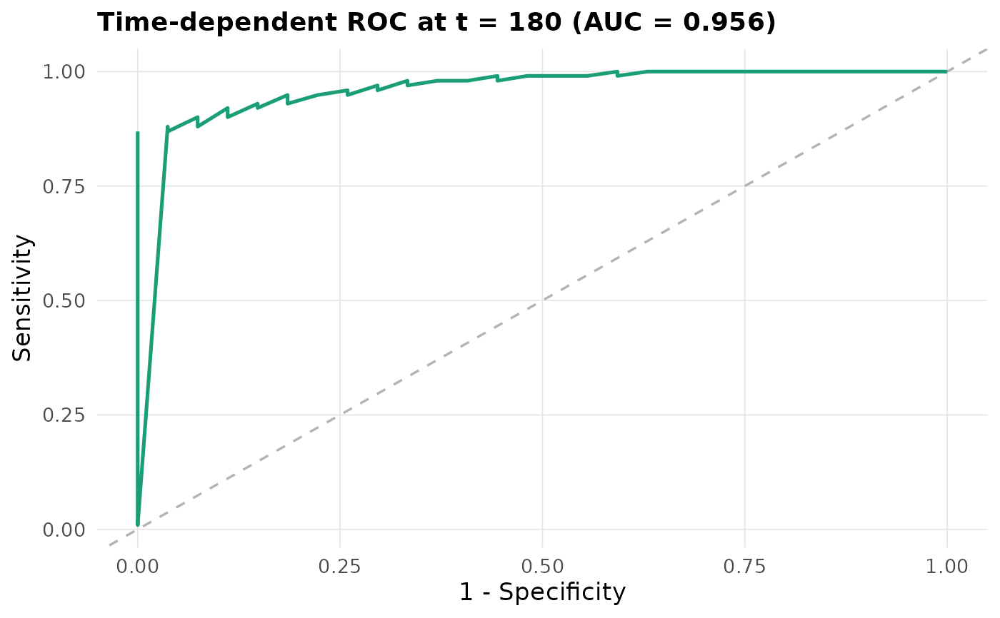

A single entry point to the package's model-agnostic explanation and
diagnostic methods. listmethods() lists the method ids
with a one-line description of each.
Arguments
- fit
A
survalis_fit(fromfit()), asurvalis_tune, or a legacymlsurv_model.- method
One of
"pdp","ice","ale","shap","shap_matrix","varimp"/"permute","interaction","counterfactual","surrogate","tree_surrogate","calibration","roc","dca","survcluster".- newdata
Instances to explain (SHAP, ALE, counterfactual, surrogate, survcluster) or to assess (
roc,dca; these need the outcome columns). Defaults todata, sorocanddcaare apparent unless you pass held-out data.- data
Background data for the method. Defaults to the training data.
- times
Evaluation grid;
NULLpicks one from the data quantiles. Methods that need a single time (calibration,roc,dca) takeeval_timein...or the soletimesvalue.- ...
Method-specific arguments, e.g.
feature(pdp / ice / ale),target_time(counterfactual, surrogate),eval_time(calibration, roc, dca),thresholds(dca),K(survcluster). For"shap", the aggregation over time ("meanabs"or"integral") is passed asshap_method.
Value
A survalis_interpret object holding the method's result, with
method, times, and a plot() method. as.data.frame() returns the
result frame. For "survcluster" it is in long format, one row per
observation and time: id (row of newdata), cluster, medoid (TRUE
for the cluster's medoid curve), time and predicted survival surv.
For "roc" and "dca" it is the curve with an eval_time column (and
auc for "roc"); for "tree_surrogate" one row per time and feature
with the number of splits on it and the tree's r_squared. For
"pdp" / "ice" it is one row per curve point (feature,
feature_value, id (NA on PDP rows), time, surv, type), for
"ale" one row per feature value and time (feature, feature_value,
time, ale), and for "calibration" the binned table with its
eval_time. For "pdp" and "ale", as.data.frame(x, what = "integrated") returns the curve integrated over time instead (feature,
feature_value, integrated).
See also
For scalar summaries use evaluate(): metrics = "ece" summarises
calibration and metrics = "auc" summarises the ROC curve.
Examples
m <- fit(Surv(time, status) ~ age + karno + celltype, veteran, "ranger",
spec = list(num.trees = 100))
interpret(m, "pdp", feature = "karno", times = c(90, 180))
#> <survalis_interpret> method = pdp | model = ranger
#> feature: karno
#> grid: 2 times in [90, 180]
#> $result:
#> feature feature_value id time surv type
#> 1 karno 10.00000 1 90 0.2099627 ice
#> 2 karno 14.68421 1 90 0.2099627 ice
#> 3 karno 19.36842 1 90 0.2077350 ice
#> 4 karno 24.05263 1 90 0.2077350 ice
#> 5 karno 28.73684 1 90 0.2572695 ice
interpret(m, "varimp", times = c(90, 180))
#> <survalis_interpret> method = varimp | model = ranger
#> grid: 2 times in [90, 180]
#> $result:
#> feature importance importance_05 importance_95 scaled_importance
#> 1 karno 0.13143405 0.10691343 0.16289422 100.00000
#> 2 celltype 0.07373054 0.05816584 0.08608992 56.09699
#> 3 age 0.03967214 0.02949784 0.04692894 30.18406
plot(interpret(m, "roc", eval_time = 180))
